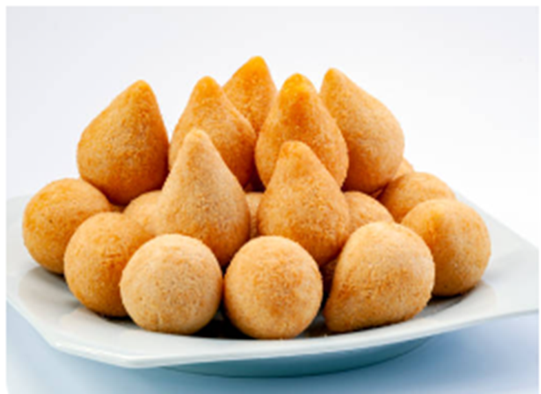
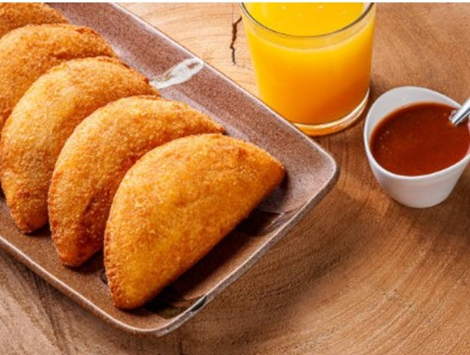

Snacks
Indulge your taste buds in the vibrant flavors of Brazil with our irresistible assortment of Brazilian snacks! Our menu features the iconic Coxinha, a savory delight that boasts a crispy exterior embracing a succulent shredded chicken filling, creating a harmonious blend of textures and tastes. Savor the warmth of Brazil with our Risolis, where thin layers of dough envelop a medley of flavors, from creamy cheese to savory meats, providing a delightful burst of satisfaction in every bite. Elevate your snacking experience with our Bolinha de Queijo, exquisite cheese-filled spheres that are both crispy and gooey, offering a mouthwatering fusion of textures. These traditional Brazilian snacks are crafted with passion and authenticity, ensuring an authentic taste of Brazil in every serving. Perfect for social gatherings, parties, or a flavorful snack on the go, our Brazilian delights bring the essence of South American cuisine to your palate. Embrace the joy of Brazilian snacking – a symphony of flavors that transports you to the lively streets of Brazil, where culinary excellence meets cultural richness. Experience the magic of Coxinha, Risolis, and Bolinha de Queijo – a taste of Brazil that lingers with every delightful crunch.
Some snacks.
 